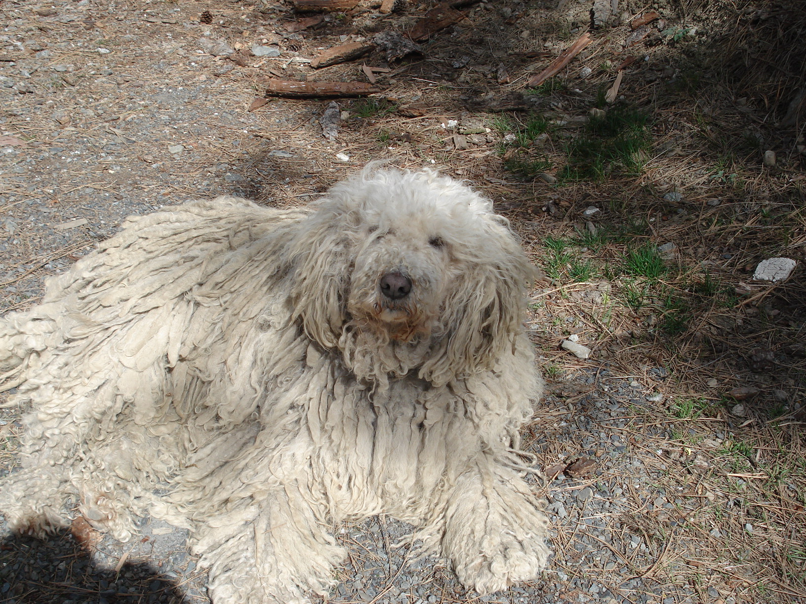

| Kutya fajták | Erdélyi kopó | Komondor | Kuvasz | Magyar vizsla | Mudi | Puli | Pumi |
|---|

A komondor legfeltűnőbb sajátossága a szőrzete, amelyhez hasonló csak a pulinak és a bergamói pásztorkutyának van. Mérete mellett ez a szőrzet teszi a komondort impozánssá, látványossá. Kialakulásában valószínűleg szerepe volt az ázsiai puszták szélsőséges éghajlatának. Ezért általában a komondornak nincs szüksége házra, csak egy helyre, ahova elhúzódik a csapadék elől. Ápolni nem kell minden nap, elég az összenemezesedett csomókat időnként széttépni, egyébként teljesen öntisztuló. Régen a pásztorok a birkák mellett a komondorról is lenyírták a szőrt, ez a minőségének, úgy látszik, nem ártott. A kiállításon elvárás a nagy szőrzet, a mindennapi életben és a dolgozó kutyákat, egészségi és állatjóléti okokból nyírni szükséges. Jelenleg csak fehér (csontfehér) színben tenyésztik, de régebben létezett sárga, foltos, vadas színű változata is.
Nagy termete ellenére mozgása kimért, elegáns. Aki látott már komondort, nehezen tud szabadulni a látvány varázsától.
Eredeti munkájából kifolyóan nem nagy igényű fajta, ha megvan a megfelelő tér a mozgásához és a gazdai szeretet, tökéletesen jól érzi magát. Az udvar, porta őrzése annyira a vérében van, hogy tanítani sem kell. A területét nappal keveset mozogva, heverészve őrzi, de ébersége egy pillanatra sem lankad, éjszaka viszont állandó mozgásban van, őrjáratozik. A gyanús mozgást hangos, mély hangú ugatással jelzi, és szerencsére igen ritkán ugat feleslegesen. A betolakodókat szembe támadja le, és nem a megsemmisítés, hanem a hatástalanítás a célja. Amíg a gazda meg nem érkezik, addig a rosszindulatú idegen nem moccanhat.